Node information
Test timing information
Up ramp statistics
Runtime session statistics
Down ramp statistics
Overall statistics
CPU usage graphs
Processes usage graphs
Memory usage graph
Disk usage graphs
Network usage graphs
| Test start | 2014-11-26 7:7:15 |
| Up ramp start | 2014-11-26 7:7:19 |
| Runtime session start | 2014-11-26 7:7:34 |
| Down ramp start | 2014-11-26 7:9:4 |
| Test end | 2014-11-26 7:10:0 |
| Up ramp length | 15 seconds 1 millisecond (requested 15000 ms) |
| Runtime session length | 1 minute 30 seconds 0 millisecond (requested 90000 ms) |
| Down ramp length | 15 seconds 1 millisecond (requested 15000 ms) |
| Total test length | 2 minutes 44 seconds 671 milliseconds |
| State name | % of total | Count | Errors | Minimum Time | Maximum Time | Average Time |
|---|---|---|---|---|---|---|
StoriesOfTheDay | 31 % | 1381 | 0 | 4 ms | 1464 ms | 132 ms
|
Register | 0 % | 43 | 0 | 1 ms | 99 ms | 4 ms
|
RegisterUser | 0 % | 31 | 1 | 10 ms | 293 ms | 40 ms
|
Browse | 5 % | 242 | 0 | 1 ms | 544 ms | 15 ms
|
BrowseCategories | 1 % | 67 | 0 | 4 ms | 10 ms | 3 ms
|
BrowseStoriesInCategory | 1 % | 51 | 0 | 20 ms | 43 ms | 14 ms
|
OlderStories | 2 % | 108 | 0 | 4 ms | 29 ms | 7 ms
|
ViewStory | 19 % | 882 | 0 | 3 ms | 534 ms | 14 ms
|
PostComment | 4 % | 202 | 0 | 1 ms | 28 ms | 2 ms
|
StoreComment | 3 % | 139 | 0 | 21 ms | 385 ms | 32 ms
|
ViewComment | 8 % | 366 | 0 | 5 ms | 397 ms | 8 ms
|
ModerateComment | 0 % | 21 | 0 | 5 ms | 14 ms | 4 ms
|
StoreModerateLog | 0 % | 7 | 0 | 94 ms | 94 ms | 13 ms
|
SubmitStory | 2 % | 112 | 0 | 3 ms | 451 ms | 12 ms
|
StoreStory | 1 % | 76 | 0 | 20 ms | 244 ms | 41 ms
|
Search | 3 % | 143 | 0 | 1 ms | 184 ms | 4 ms
|
SearchInStories | 1 % | 52 | 0 | 4 ms | 534 ms | 15 ms
|
SearchInComments | 0 % | 30 | 0 | 11 ms | 241 ms | 18 ms
|
SearchInUsers | 0 % | 13 | 0 | 5 ms | 31 ms | 4 ms
|
Author (login) | 0 % | 27 | 0 | 2 ms | 22 ms | 3 ms
|
Author (task) | 0 % | 21 | 0 | 4 ms | 25 ms | 4 ms
|
ReviewStories | 0 % | 16 | 0 | 10 ms | 27 ms | 11 ms
|
AcceptStory | 0 % | 7 | 0 | 41 ms | 104 ms | 30 ms
|
RejectStory | 0 % | 4 | 0 | 18 ms | 37 ms | 13 ms
|
Back probability | 3 % | 142 | 0 | 0 ms | 0 ms | 0 ms
|
End of Session | 5 % | 253 | 0 | 0 ms | 0 ms | 0 ms
|
Total | 100 % | 4436 | 1 | - | - | 49 ms
|
Average throughput | 295 req/s
| |||||
Completed sessions | 178
| |||||
Total time | 1380 seconds
| |||||
Average session time | 7 seconds
| |||||
| State name | % of total | Count | Errors | Minimum Time | Maximum Time | Average Time |
|---|---|---|---|---|---|---|
StoriesOfTheDay | 16 % | 2318 | 0 | 5 ms | 263 ms | 12 ms
|
Register | 1 % | 162 | 0 | 1 ms | 160 ms | 3 ms
|
RegisterUser | 1 % | 156 | 1 | 5 ms | 302 ms | 57 ms
|
Browse | 4 % | 699 | 0 | 1 ms | 85 ms | 2 ms
|
BrowseCategories | 1 % | 278 | 0 | 3 ms | 49 ms | 6 ms
|
BrowseStoriesInCategory | 3 % | 475 | 0 | 10 ms | 408 ms | 29 ms
|
OlderStories | 3 % | 482 | 0 | 4 ms | 195 ms | 15 ms
|
ViewStory | 15 % | 2250 | 0 | 3 ms | 492 ms | 17 ms
|
PostComment | 6 % | 876 | 0 | 1 ms | 373 ms | 3 ms
|
StoreComment | 6 % | 868 | 0 | 19 ms | 465 ms | 84 ms
|
ViewComment | 10 % | 1486 | 0 | 4 ms | 468 ms | 20 ms
|
ModerateComment | 0 % | 97 | 0 | 3 ms | 58 ms | 9 ms
|
StoreModerateLog | 0 % | 60 | 0 | 23 ms | 611 ms | 110 ms
|
SubmitStory | 3 % | 446 | 0 | 3 ms | 36 ms | 4 ms
|
StoreStory | 2 % | 364 | 0 | 18 ms | 502 ms | 61 ms
|
Search | 3 % | 529 | 0 | 1 ms | 371 ms | 4 ms
|
SearchInStories | 2 % | 397 | 0 | 3 ms | 244 ms | 11 ms
|
SearchInComments | 1 % | 231 | 0 | 5 ms | 855 ms | 41 ms
|
SearchInUsers | 0 % | 84 | 0 | 5 ms | 93 ms | 13 ms
|
Author (login) | 0 % | 82 | 0 | 1 ms | 27 ms | 2 ms
|
Author (task) | 0 % | 76 | 0 | 3 ms | 35 ms | 6 ms
|
ReviewStories | 0 % | 78 | 0 | 8 ms | 394 ms | 23 ms
|
AcceptStory | 0 % | 70 | 9 | 3 ms | 442 ms | 114 ms
|
RejectStory | 0 % | 36 | 10 | 5 ms | 157 ms | 46 ms
|
Back probability | 4 % | 696 | 0 | 0 ms | 0 ms | 0 ms
|
End of Session | 6 % | 952 | 0 | 0 ms | 0 ms | 0 ms
|
Total | 100 % | 14248 | 20 | - | - | 18 ms
|
Average throughput | 158 req/s
| |||||
Completed sessions | 940
| |||||
Total time | 39692 seconds
| |||||
Average session time | 42 seconds
| |||||
| State name | % of total | Count | Errors | Minimum Time | Maximum Time | Average Time |
|---|---|---|---|---|---|---|
StoriesOfTheDay | 16 % | 405 | 0 | 5 ms | 121 ms | 13 ms
|
Register | 1 % | 26 | 0 | 1 ms | 57 ms | 7 ms
|
RegisterUser | 1 % | 28 | 1 | 4 ms | 293 ms | 52 ms
|
Browse | 5 % | 124 | 0 | 1 ms | 99 ms | 4 ms
|
BrowseCategories | 2 % | 51 | 0 | 4 ms | 31 ms | 6 ms
|
BrowseStoriesInCategory | 3 % | 92 | 0 | 16 ms | 461 ms | 28 ms
|
OlderStories | 3 % | 92 | 0 | 4 ms | 47 ms | 12 ms
|
ViewStory | 16 % | 399 | 0 | 3 ms | 358 ms | 15 ms
|
PostComment | 5 % | 145 | 0 | 1 ms | 58 ms | 3 ms
|
StoreComment | 5 % | 131 | 0 | 20 ms | 477 ms | 79 ms
|
ViewComment | 10 % | 251 | 0 | 5 ms | 485 ms | 17 ms
|
ModerateComment | 0 % | 16 | 0 | 5 ms | 55 ms | 10 ms
|
StoreModerateLog | 0 % | 9 | 0 | 31 ms | 228 ms | 120 ms
|
SubmitStory | 3 % | 76 | 0 | 3 ms | 60 ms | 6 ms
|
StoreStory | 2 % | 61 | 0 | 22 ms | 368 ms | 67 ms
|
Search | 3 % | 98 | 0 | 2 ms | 48 ms | 3 ms
|
SearchInStories | 3 % | 82 | 0 | 3 ms | 445 ms | 15 ms
|
SearchInComments | 1 % | 46 | 0 | 6 ms | 636 ms | 39 ms
|
SearchInUsers | 0 % | 17 | 0 | 6 ms | 252 ms | 22 ms
|
Author (login) | 0 % | 19 | 0 | 1 ms | 4 ms | 2 ms
|
Author (task) | 0 % | 20 | 0 | 4 ms | 6 ms | 2 ms
|
ReviewStories | 0 % | 11 | 0 | 9 ms | 18 ms | 13 ms
|
AcceptStory | 0 % | 8 | 3 | 4 ms | 257 ms | 181 ms
|
RejectStory | 0 % | 5 | 1 | 4 ms | 49 ms | 63 ms
|
Back probability | 4 % | 99 | 0 | 0 ms | 0 ms | 0 ms
|
End of Session | 6 % | 149 | 0 | 0 ms | 0 ms | 0 ms
|
Total | 100 % | 2460 | 5 | - | - | 17 ms
|
Average throughput | 164 req/s
| |||||
Completed sessions | 164
| |||||
Total time | 10581 seconds
| |||||
Average session time | 64 seconds
| |||||
| State name | % of total | Count | Errors | Minimum Time | Maximum Time | Average Time |
|---|---|---|---|---|---|---|
StoriesOfTheDay | 19 % | 4104 | 0 | 4 ms | 1464 ms | 53 ms
|
Register | 1 % | 231 | 0 | 1 ms | 160 ms | 4 ms
|
RegisterUser | 1 % | 215 | 3 | 4 ms | 302 ms | 54 ms
|
Browse | 5 % | 1066 | 0 | 1 ms | 544 ms | 5 ms
|
BrowseCategories | 1 % | 396 | 0 | 3 ms | 49 ms | 5 ms
|
BrowseStoriesInCategory | 2 % | 618 | 0 | 10 ms | 461 ms | 28 ms
|
OlderStories | 3 % | 682 | 0 | 4 ms | 195 ms | 14 ms
|
ViewStory | 16 % | 3531 | 0 | 3 ms | 534 ms | 16 ms
|
PostComment | 5 % | 1223 | 0 | 1 ms | 373 ms | 3 ms
|
StoreComment | 5 % | 1138 | 0 | 19 ms | 477 ms | 77 ms
|
ViewComment | 9 % | 2103 | 0 | 4 ms | 485 ms | 18 ms
|
ModerateComment | 0 % | 134 | 0 | 3 ms | 58 ms | 8 ms
|
StoreModerateLog | 0 % | 76 | 0 | 23 ms | 611 ms | 104 ms
|
SubmitStory | 3 % | 636 | 0 | 3 ms | 451 ms | 6 ms
|
StoreStory | 2 % | 501 | 0 | 18 ms | 502 ms | 58 ms
|
Search | 3 % | 770 | 0 | 1 ms | 371 ms | 4 ms
|
SearchInStories | 2 % | 531 | 0 | 3 ms | 534 ms | 12 ms
|
SearchInComments | 1 % | 307 | 0 | 5 ms | 855 ms | 39 ms
|
SearchInUsers | 0 % | 114 | 0 | 5 ms | 252 ms | 13 ms
|
Author (login) | 0 % | 128 | 0 | 1 ms | 27 ms | 2 ms
|
Author (task) | 0 % | 117 | 0 | 3 ms | 35 ms | 5 ms
|
ReviewStories | 0 % | 105 | 0 | 8 ms | 394 ms | 20 ms
|
AcceptStory | 0 % | 85 | 12 | 3 ms | 442 ms | 111 ms
|
RejectStory | 0 % | 45 | 11 | 4 ms | 157 ms | 44 ms
|
Back probability | 4 % | 937 | 0 | 0 ms | 0 ms | 0 ms
|
End of Session | 6 % | 1354 | 0 | 0 ms | 0 ms | 0 ms
|
Total | 100 % | 21147 | 26 | - | - | 25 ms
|
Average throughput | 176 req/s
| |||||
Completed sessions | 1354
| |||||
Total time | 56921 seconds
| |||||
Average session time | 42 seconds
| |||||
An error occured while waiting for remote processes termination (process hasn't exited)
test#####1
test#####2
test#####3
Command is: /usr/bin/rsh -x localhost /bin/bash -c 'LANG=en_GB.UTF-8 /usr/local/bin/sar -n DEV -n SOCK -rubcw 1 125 -f /home/ubuntu/RUBBoS/bench/2014-11-26@7:7:15/web_server.bin > /home/ubuntu/RUBBoS/bench/2014-11-26@7:7:15/web_server'
Command is: /usr/bin/rsh -x localhost /bin/bash -c 'LANG=en_GB.UTF-8 /usr/local/bin/sar -n DEV -n SOCK -rubcw 1 125 -f /home/ubuntu/RUBBoS/bench/2014-11-26@7:7:15/db_server.bin > /home/ubuntu/RUBBoS/bench/2014-11-26@7:7:15/db_server'
Command is: /usr/bin/rsh -x localhost /bin/bash -c 'LANG=en_GB.UTF-8 /usr/local/bin/sar -n DEV -n SOCK -rubcw 1 125 -f /home/ubuntu/RUBBoS/bench/2014-11-26@7:7:15/client0.bin > /home/ubuntu/RUBBoS/bench/2014-11-26@7:7:15/client0'
Command is: /usr/bin/rsh -x localhost /bin/bash -c 'LANG=en_GB.UTF-8 /usr/local/bin/sar -n DEV -n SOCK -rubcw 1 125 -f /home/ubuntu/RUBBoS/bench/2014-11-26@7:7:15/client1.bin > /home/ubuntu/RUBBoS/bench/2014-11-26@7:7:15/client1'
hantest
/home/ubuntu/RUBBoS/bench/2014-11-26@7:7:15/
gif
2
Generating data files ... '/home/ubuntu/RUBBoS/bench/2014-11-26@7:7:15/db_server' done.
Generating data files ... '/home/ubuntu/RUBBoS/bench/2014-11-26@7:7:15/web_server' done.
Generating data files ... '/home/ubuntu/RUBBoS/bench/2014-11-26@7:7:15/client0' done.
Generating data files ... '/home/ubuntu/RUBBoS/bench/2014-11-26@7:7:15/client1' done.
Generating servers CPU idle time graph
Generating servers CPU busy time graph
Generating servers CPU user/system time graph
Generating servers Processes/second graph
Generating servers Context switches/second graph
Generating servers Disk total transfers graph
Generating servers disk read/write requests graph
Generating servers disk blocks read/write requests graph
Generating servers Memory usage graph
Generating servers Memory & cache usage graph
Generating servers network received/transmitted packets graph
Generating servers network received/transmitted bytes graph
Generating servers Sockets usage graph
Generating clients CPU idle time graph
Generating clients CPU busy time graph
Generating clients CPU user/system time graph
Generating clients Processes/second graph
Generating clients Context switches/second graph
Generating clients Disk total transfers graph
Generating clients disk read/write requests graph
Generating clients disk blocks read/write requests graph
Generating clients Memory usage graph
Generating clients Memory & cache usage graph
Generating clients network received/transmitted packets graph
Generating clients network received/transmitted bytes graph
Generating clients Sockets usage graph
Erasing temporary files ...
|
|
| 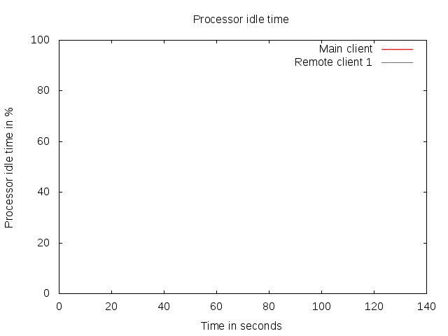 |
| 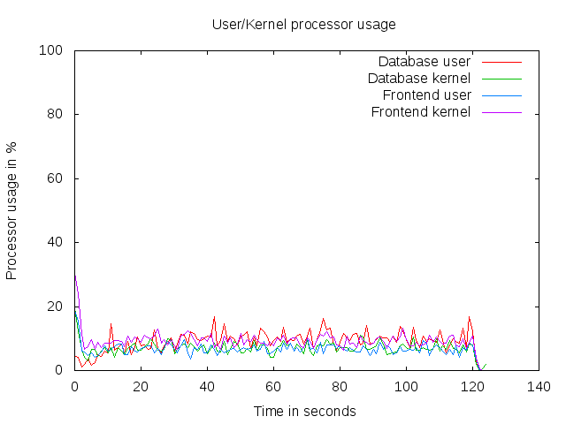 |
|
| 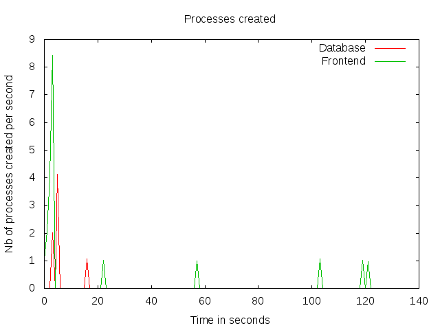 | 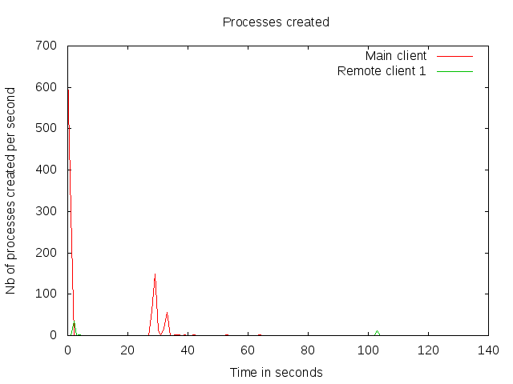 |
| 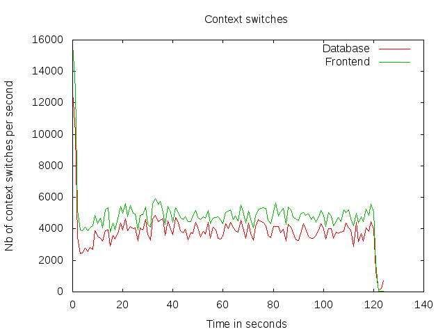 | 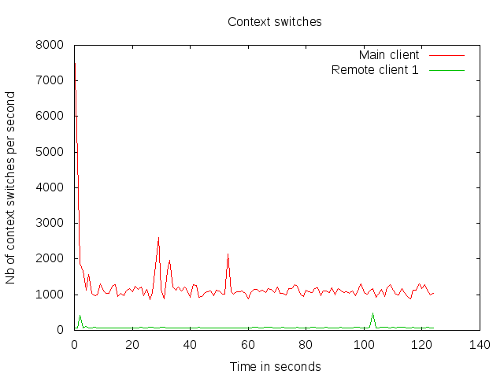 |
| 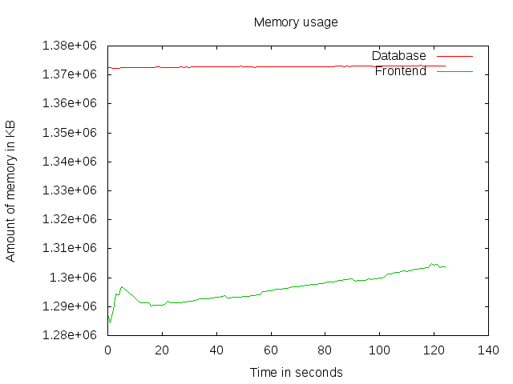 | 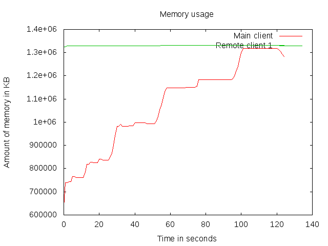 |
| 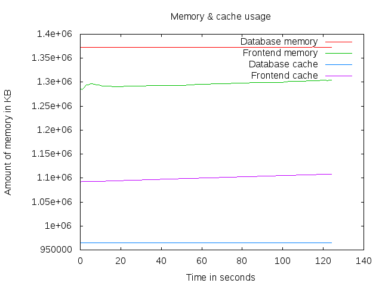 | 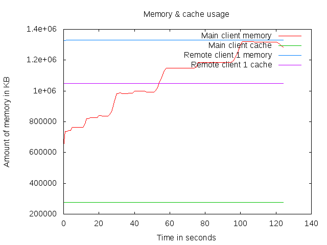 |
| 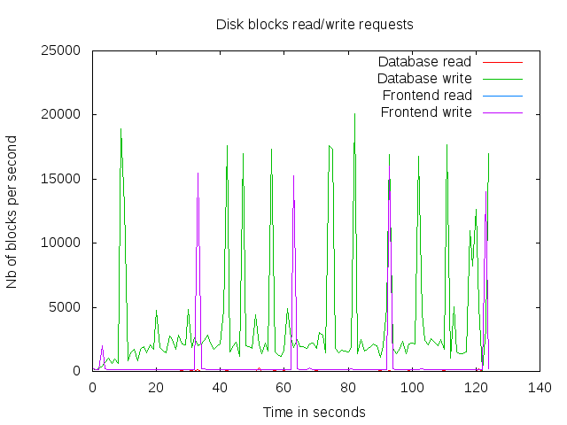 | 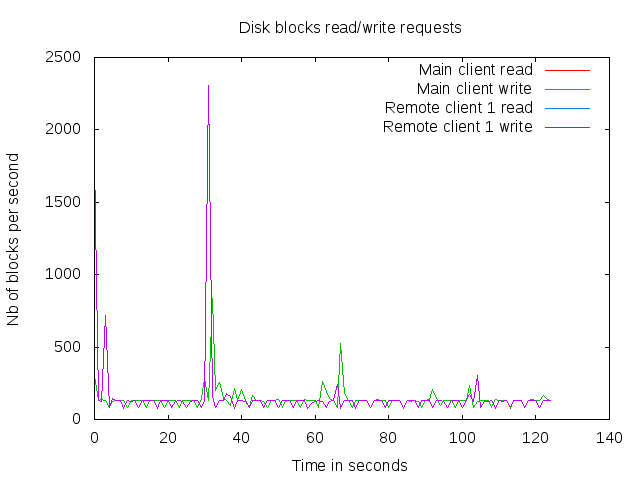 |
| 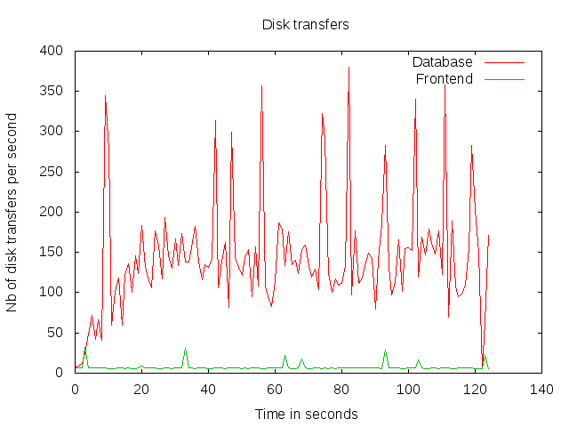 | 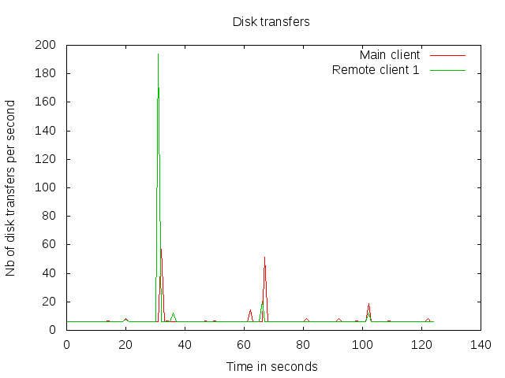 |
| 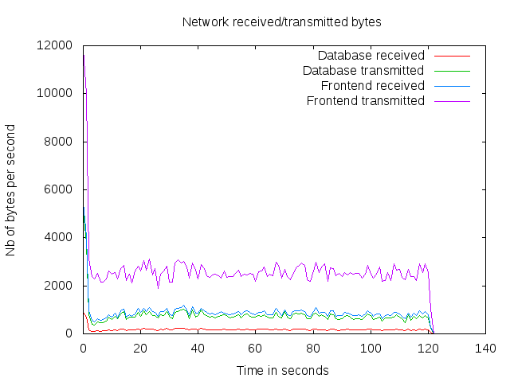 | 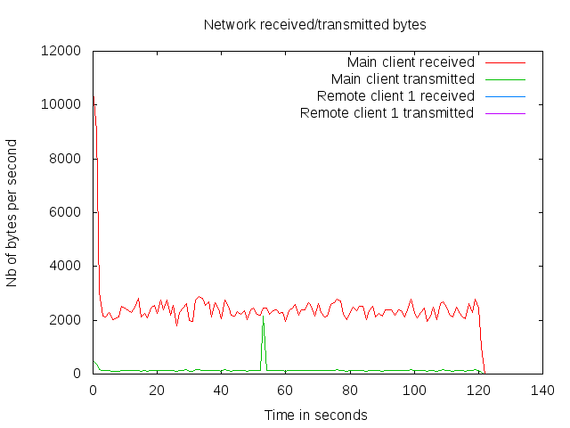 |
| 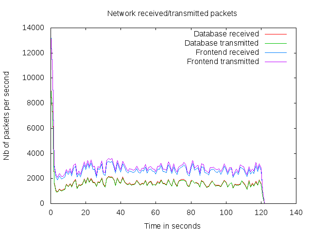 | 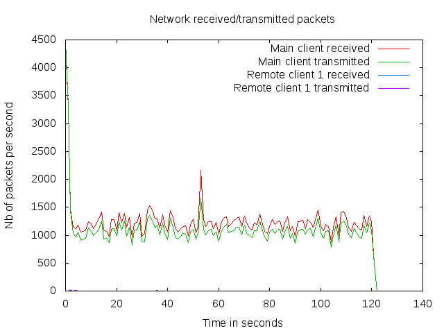 |
| 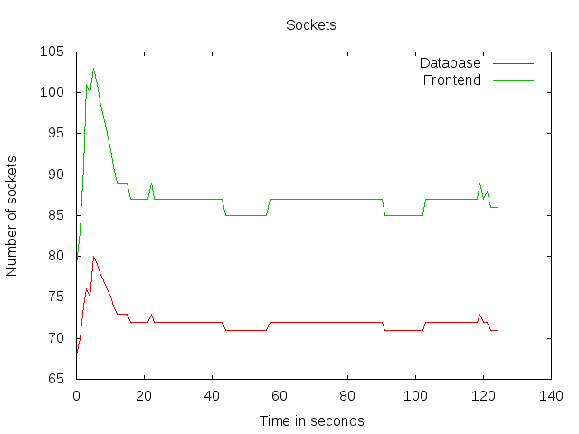 | 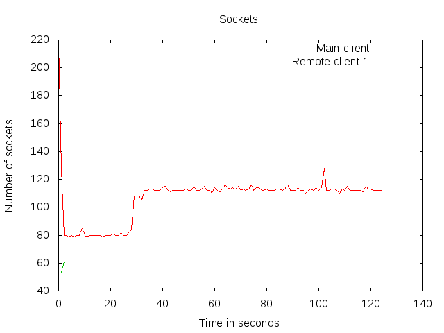 |